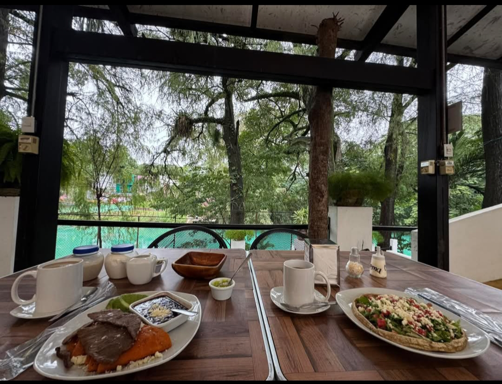
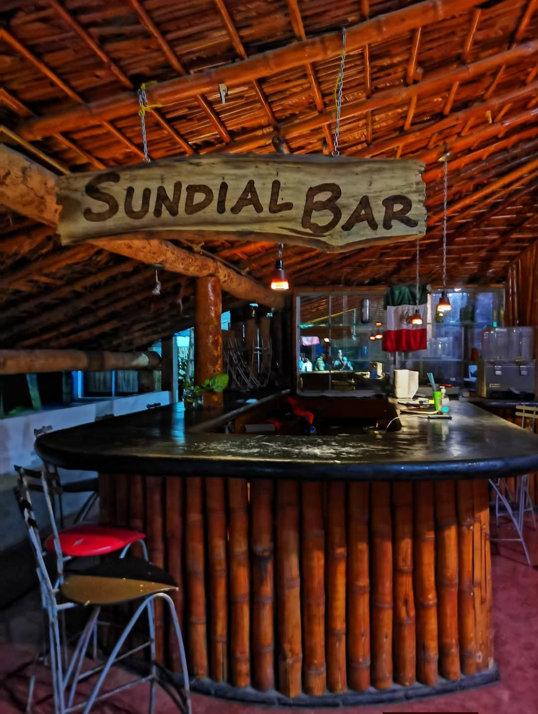
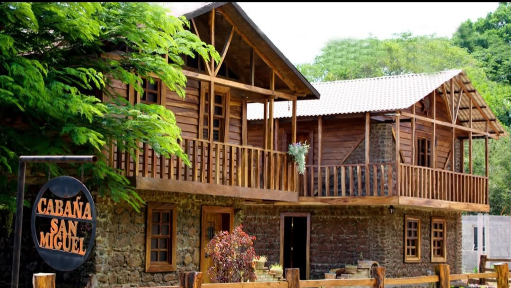
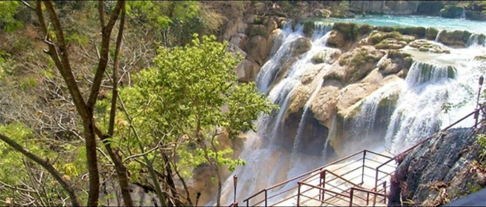

Todo lo que necesitas para una visita perfecta e inolvidable

Disfruta de una amplia selección de platillos regionales y nacionales en nuestro restaurante buffet. Preparados con ingredientes frescos y locales, nuestros cocineros crean una experiencia gastronómica que complementa perfectamente la belleza natural del lugar.

A lo largo del recinto encontrarás una variedad de puestos donde podrás adquirir artesanías locales, recuerdos, snacks y todo lo necesario para tu visita. Apoya a los comerciantes de la región llevándote un pedacito de la Sierra Potosina a casa.

Extiende tu estancia y despierta con el sonido de la cascada. Nuestras cabañas están diseñadas para brindar confort y privacidad en un entorno completamente natural. Perfectas para una escapada romántica o en familia.

Sube a nuestros miradores estratégicamente ubicados para contemplar vistas panorámicas de la cascada, el río y el valle. El lugar perfecto para fotografías, momentos de meditación y observación de la flora y fauna local.
Contáctanos para reservar cabañas o cualquier servicio especial.
Ver Contacto